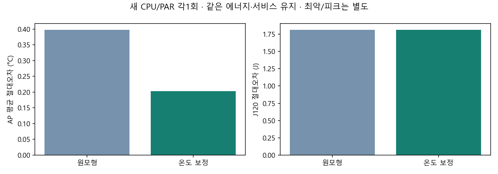

D1Check · 핵심10장 · 실측 기반 CPU/GPU 스케줄링 · 공유 최종본
온디바이스 AI의 CPU/GPU 자원 스케줄링 실측 기반 시뮬레이션으로
주제 한 Android 앱 안의 분류·탐지 요청
방법 실측 → 모형 검증 → 산업공학 리스트·롤링 → RL → 기기 확인
이번 추가 3492환경 / 1440학습. 현재3learner terminal 본학습 1536에피소드(기존96 포함). 기기 세션은 별도 장부.
발표자 노트 D1Check · 부록9장 · 실측 기반 CPU/GPU 스케줄링 · 공유 최종본
실제 문제: 같은 자원을 두 작업이 나눠 쓴다 결정할 것 무엇을 먼저, CPU/GPU 어디에, 지금 실행할지
자원 배정은 응답·전체 완료량·에너지·열 경로를 함께 바꿀 수 있다. 같은 작업을 덜 처리하거나 기한을 놓쳐 얻은 비용 감소는 개선으로 판정하지 않는다. 발표자 노트 D1Check · 핵심10장 · 실측 기반 CPU/GPU 스케줄링 · 공유 최종본
범위와 KPI를 먼저 고정했다 지킬 것 전체 예정 요청·출력 품질·긴급 P95·기한
줄일 것 같은 AP 채널의 최고값과 공통창 에너지 J
이번 자원 A24 분류 CPU/GPU · 탐지 CPU · 검증된 CG_DC 병행
기한 1.5초/6초는 engineering scenario이며 사용자 SLA가 아니다. 표면 온도는 미확인이다. AP를 최고 표면 온도의 달성값으로 바꾸지 않는다. 선점·주파수 제어·전력 제한·NPU 확장은 이번 비교에 추가하지 않았다. 발표자 노트 D1Check · 핵심10장 · 실측 기반 CPU/GPU 스케줄링 · 공유 최종본
실측 근거와 품질의 의미 기본 실측 30세션·480호출 · 출력 동등성 480건
시간 분해 CAL-03 개발8+확인8 · 본64·warmup128
별도 독립 평가 27세션·198요청 · 우선순위 효과와 조건부 정책 FAIL 보존
고정 모델·입력·전처리·decoder를 유지했다. 일반 데이터셋 정확도나 mAP로 전용하지 않는다. 과거 우선순위 평가와 이번 열·에너지 정책 평가의 기한·자료·판정을 합쳐 전후 개선이라고 부르지 않는다. 발표자 노트 D1Check · 부록9장 · 실측 기반 CPU/GPU 스케줄링 · 공유 최종본
응답 완료와 자원 반환을 분리한다 배정 → 실행 시작 → 출력 준비 → 저장 완료 → worker 해제 → lane 반환 고정 5phase 점유 벡터로 실행한다. 같은 시각의 연속 배정도 용량을 지킨다. 미완료·실패·기한 초과를 전체 예정 요청 분모에서 지우지 않는다. 발표자 노트 D1Check · 핵심10장 · 실측 기반 CPU/GPU 스케줄링 · 공유 최종본
새 열 모형: 평균 오차는 줄었고 한계는 남았다 AP 평균 MAE 0.397453 → 0.202484 °C
J120 절대오차 1.812202 → 1.812202 J
확인 범위 새 CPU/PAR 각각 1회 · 192요청

원 에너지·서비스 예측을 유지했다. CPU 최대·피크 오차는 악화했다. 냉각에 따른 속도 회복은 없다. 작은 정책 AP/J 차이를 실제 절감으로 확정할 수 없다. 발표자 노트 D1Check · 핵심10장 · 실측 기반 CPU/GPU 스케줄링 · 공유 최종본
산업공학 구조: EDD·ECT + 공동 롤링 현재 공개 큐 → 최대4요청 → 순서·자원·대기 → 첫 행동 실행 → 도착/반환 재계획 공동 롤링 ≤72계획 → mean 선별8 → 세 문맥 평가
분류는 CPU/GPU에 유연하고 탐지는 CPU 전용이다. 자원 호환성과 납기 여유를 함께 고려한다. 미래 도착을 보고 전체 최적 일정을 짜는 방식이 아니다. 현재 요청의 첫 행동만 실행한다. 설명용 예시: 분류1건+탐지1건
발표자 노트 D1Check · 핵심10장 · 실측 기반 CPU/GPU 스케줄링 · 공유 최종본
강한 비교군도 출처의 판단 규칙을 옮겼다 Band 대응 largest-shortest 요청·예상 비용·busy worker yield·관측 EMA
Triton 대응 고정 요청·CPU/GPU 자원 제약과 RateLimiter 판단 흐름
비교 범위 같은 엔진·같은 입력의 제한적 규칙 대응 B
Band subgraph를 전체 모델 요청으로 바꾨다. 원 Band와 동일 알고리즘·제품 실행이라고 부르지 않는다. Triton 서버 전체를 돌린 결과가 아니다. Ente 시작 허용과 자원 배정도 서로 다른 제어 대상이다. 발표자 노트 D1Check · 부록9장 · 실측 기반 CPU/GPU 스케줄링 · 공유 최종본
리스트 보완: 무조건 기다리는 문제를 줄였다 같은 후보 Rule 공통 리스트에서 예측 AP·J로 선택
R2 현재 요청 모두의 예상 응답도 L0보다 늦추지 않음
관측 부하·CPU 전용 작업량·요청별 누적 대기를 쓰지만 미래 도착을 알지는 못한다. 요청마다 추가 냉각 대기 ≤0.25초. 새 도착·실제 AVAILABLE·timer에서 재판단한다. 발표자 노트 D1Check · 핵심10장 · 실측 기반 CPU/GPU 스케줄링 · 공유 최종본
확인①: R1은 서비스 손실을 막았지만 교체 기준은 미달 정책 완료/예정 긴급 기한 일반 기한 조건별 긴급P95 평균 ΔJ 평균 Δ최고 AP °C Band 전체 요청 대응 3168/3168 0 40 352.354 +0.000000 +0.000000 Triton 고정 요청 대응 3168/3168 0 40 386.822 +0.478953 +0.018656 서비스 우선 리스트 3168/3168 0 40 352.354 +0.051831 +0.002390 기존 열·에너지 리스트 3168/3168 0 42 352.354 -0.075051 -0.001776 관측 전 대기 금지 3168/3168 0 40 352.354 -0.075051 -0.001708 현재 응답 보존 리스트 3168/3168 0 40 352.354 +0.002800 +0.000089
위반은 늦은 완료이며 실행 오류와 다르다. 전량 완료와 양립한다. P95 평균은 조건별 P95의 평균이며 전체 요청 pooling P95가 아니다.
평균 비용 감소와 엄격한 전 조건 통과는 다르다.
4개 도착 seed×4부하×3민감도 문맥. 48번의 독립 실측이 아니다.
발표자 노트 D1Check · 부록9장 · 실측 기반 CPU/GPU 스케줄링 · 공유 최종본
확인②: P95 유연성을 열어도 공동 개선은 자동으로 생기지 않았다 정책 완료/예정 긴급 기한 일반 기한 조건별 긴급P95 평균 ΔJ 평균 Δ최고 AP °C Band 전체 요청 대응 3168/3168 0 42 337.467 +0.000000 +0.000000 Triton 고정 요청 대응 3168/3168 0 42 371.936 +0.471387 +0.017743 서비스 우선 리스트 3168/3168 0 42 337.467 +0.025448 +0.001360 기존 열·에너지 리스트 3168/3168 0 42 337.467 -0.078964 -0.000427 P95 제약 실행·자원 대기 유연성 3168/3168 0 42 337.467 -0.080294 +0.000518
위반은 늦은 완료이며 실행 오류와 다르다. 전량 완료와 양립한다. P95 평균은 조건별 P95의 평균이며 전체 요청 pooling P95가 아니다.
P95 유연성: 에너지 감소·AP 증가의 상충. 원 판정 FAIL 유지.
확인①과 다른 4개 도착 seed. 세 문맥은 민감도이며 독립 시행이 아니다.
발표자 노트 D1Check · 부록9장 · 실측 기반 CPU/GPU 스케줄링 · 공유 최종본
RL은 실제로 학습했다: 짧은 3seed 파일럿 정책 완료/예정 긴급 기한 일반 기한 조건별 긴급P95 평균 J 평균 최고 AP °C Band 판단규칙 대응 1584/1584 0 18 319.171 152.281267 30.455470 같은 후보 비학습 선택기 1584/1584 0 18 319.171 152.196508 30.454863 PPO seed11 · 학습32 1584/1584 0 18 319.171 152.281267 30.455470 PPO seed23 · 학습32 1584/1584 0 21 319.171 152.096099 30.450481 PPO seed37 · 학습32 1584/1584 0 21 319.171 152.096099 30.450481
위반은 늦은 완료이며 실행 오류와 다르다. 전량 완료와 양립한다. P95 평균은 조건별 P95의 평균이며 전체 요청 pooling P95가 아니다.
각32에피소드·4update. 최종 actor/critic/Adam/RNG를 보존했다.
seed11은 개발24 일정이 Band와 동일. seed23/37은 비용 감소와 기한 손실이 상충했다. 32에피소드를 수렴 완료 또는 RL 일반의 실패로 해석하지 않는다. 발표자 노트 D1Check · 핵심10장 · 실측 기반 CPU/GPU 스케줄링 · 공유 최종본
같은 설정으로 더 학습하면 개선되는가? 정책 완료/예정 긴급 기한 일반 기한 조건별 긴급P95 평균 J 평균 최고 AP °C Band 판단규칙 대응 3168/3168 0 42 361.862 152.285040 30.463676 Triton 판단규칙 대응 3168/3168 0 42 405.056 152.767088 30.482239 같은 후보 비학습 선택기 3168/3168 0 45 356.273 152.197866 30.456615 PPO seed11 · 학습512 3168/3168 0 45 356.273 152.292797 30.463565 PPO seed23 · 학습512 3168/3168 0 45 356.273 152.292797 30.463565 PPO seed37 · 학습512 3168/3168 0 45 356.273 152.302553 30.463689
위반은 늦은 완료이며 실행 오류와 다르다. 전량 완료와 양립한다. P95 평균은 조건별 P95의 평균이며 전체 요청 pooling P95가 아니다.
같은 learner 32→64→128→256→512 · 최종 유망 기준 0/3seed 통과
이번 추가학습 1440회. 3learner terminal 본학습량 1536회에는 기존32×3=96이 포함된다. 기저 소비에96을 다시 더하지 않는다.
발표자 노트 D1Check · 핵심10장 · 실측 기반 CPU/GPU 스케줄링 · 공유 최종본
A24 확인: PC 계획과 실제 실행의 차이를 본다 순서/원 정책 완료/예정 긴급/일반 긴급 P95 ms 조건부 J 최고 AP °C 초기 AP °C 0: BAND_HEFT_WHOLE_REQUEST_ADAPT_V1 96/96 0/0 295.944 140.290 31.600 29.300 1: ROLLING_LIST_PUBLIC_RISK_RULE_V1 96/96 0/0 293.135 144.046 31.700 29.300 2: ROLLING_LIST_PUBLIC_RISK_RULE_V1 96/96 0/0 295.790 136.781 31.800 29.500 3: BAND_HEFT_WHOLE_REQUEST_ADAPT_V1 96/96 0/0 295.206 141.538 32.200 29.600
고정 계획 재생 · 온라인 Band/롤링/RL 직접 운영 효과가 아니다.
실측 J/AP 최고: 공통0..120초. PC J0..120/AP35..180과 온도 창이 다르다. 정책별2회·초기AP·전류 단위에 따른 조건부 J를 함께 본다. 미세 PC 차이와 기기 변동을 직접 전후 개선으로 합치지 않는다.
발표자 노트 D1Check · 핵심10장 · 실측 기반 CPU/GPU 스케줄링 · 공유 최종본
추천과 아직 확정하지 않은 것 앱 기본 기존 앱 설정 유지. 새 정책 최종 채택0.
자체 발전 후보 리스트 후보+RL 방향에서 R1을 연구 후보기반으로 남긴다.
강한 비교군 Band 요청 대응은 강한 기준선이다. 우리 정책의 기본으로 채택한 것은 아니다.
평균 모형 J/AP 감소와 엄격한 모든 조건 우위를 함께 보고한다. 정책의 기본·복귀·학습 참조는 리스트 L0이며 Band는 비교군이다. 회의용 연구 묶음 완료와 새 열·에너지 정책 확립·전체 SUBMIT-02 완료를 구분한다. 발표자 노트 D1Check · 부록9장 · 실측 기반 CPU/GPU 스케줄링 · 공유 최종본
한계와 다음 작업을 구체적으로 남긴다 열→처리시간 회복 효과: 같은 입력·경합의 실제 감속과 유휴 회복 전후를 독립 계측해야 한다. 표면 온도: AP와 별개 측정 채널·장비·교정이 필요하다. AP를 표면값으로 바꾸지 않는다. 실제 온라인 정책: 동결 계획 재생과 별도로 판단 지연·제어 비용·같은 조건 반복을 확인해야 한다. 대표성: 합성 trace·고정 입력·기기 한정 범위이며 다른 앱/기기/모델로 자동 일반화하지 않는다. 배포: EfficientDet exact binary의 license/NOTICE 귀속이 미확인이다. 모델을 Git/APK/팀 공유물에 넣지 않는다. 발표자 노트 D1Check · 부록9장 · 실측 기반 CPU/GPU 스케줄링 · 공유 최종본
사후 기전 진단: 학습과 별개로 검토할 제약 같은 확인 자료 재사용 R1/Flex만 새96환경. 원480행 SHA 재사용.
일반 기한 위반 Band 42 · L0/R1/Flex 45
같은 공개 상태 GPU분류+CPU탐지는 물리허용, 예측응답 제약으로 차단
35.165초 최초 분기: L0는 분류CPU, Band 대응은 분류GPU+탐지CPU. 현재 긴급2건의 P95는 최댓값이므로 P95 유연성 보완도 같은 후보를 막는다. 대표 조건은 냉각·자원 대기0. 추가 위반을 냉각 때문이라고 단정할 수 없다. 학습참조 L0의 서비스 비악화와 최종 Band 대비 서비스 비악화는 다르다.
같은 상태의 배정·뒤 요청 기한 그림
발표자 노트 D1Check · 부록9장 · 실측 기반 CPU/GPU 스케줄링 · 공유 최종본
질의응답 ① 산업공학 기여는 무엇인가? 납기 순서·예상 점유·자원 호환성·제약·rolling horizon을 앱 내부 비선점 CPU/GPU 배정에 대응하고 실제 근거로 평가했다. 새로운 일반 최적 알고리즘을 입증한 것은 아니다.
왜 기본 정책이 좋은가? 검증된 자원이 적고, 빠른 자원 선택과 CPU/GPU 병행이 이미 많은 이득을 만든다. 예측 위험·미관측 미래를 고려하면 남은 안전한 차이가 작다.
RL을 실제로 돌렸나? 3seed 각각512에피소드·64update·Adam768step의 masked PPO를 실제 학습했다. 기존32에서 같은 최종 actor/critic/Adam/RNG를 이어 추가1440에피소드를 수행했다. 개발 동률이 새 확인에서 일반화되지는 않았고 세 seed 모두 원 기준 미달이다.
얼마나 돌리면 수렴하나? 정해진 횟수만으로 수렴이나 전역 최적을 보장할 수 없다. 학습량 효과는 비단조일 수 있다. 복수 seed·학습량별 원 KPI의 안정성과 확인 자료를 본다. NoWait는 냉각·자원 대기를 둘 다 제거한 진단이다.
발표자 노트 D1Check · 부록9장 · 실측 기반 CPU/GPU 스케줄링 · 공유 최종본
질의응답 ② AP는 표면 온도인가? 아니다. 동일 AP 채널의 모형/실측 지표다. 평균 모형 오차 감소도 표면 온도·안전 한도·속도 회복 검증이 아니다.
왜 추가 실측을 하나? 작은 모형 AP/J 차이가 실제 실행·관측에서도 나타나는지 확인하기 위해서다. 이번 고정 계획 재생은 온라인 판단 효과와 구분한다.
무엇을 추천하나? 기존 앱 기본은 유지하고 리스트 후보+RL 방향에서 R1을 자체 발전 후보로 남긴다. Band는 강한 비교군이며 우리 기본으로 채택한 것이 아니다. 최종 RL은 복수 seed·서비스·실측 범위를 함께 본다.
가장 큰 한계는 무엇인가? 미관측 미래 도착, 제한된 자원·trace·초기 상태, 냉각→속도 연결 미지원, 표면/절대 에너지 교정·온라인 기기 효과·모델 배포 라이선스 공백이다.
발표자 노트 이전 다음 부록 포함 노트 N 인쇄